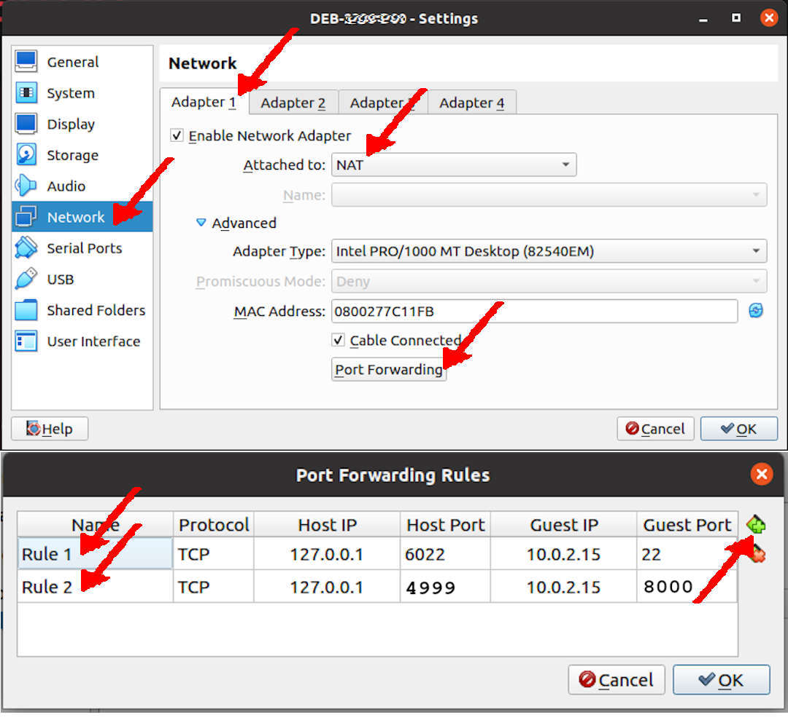
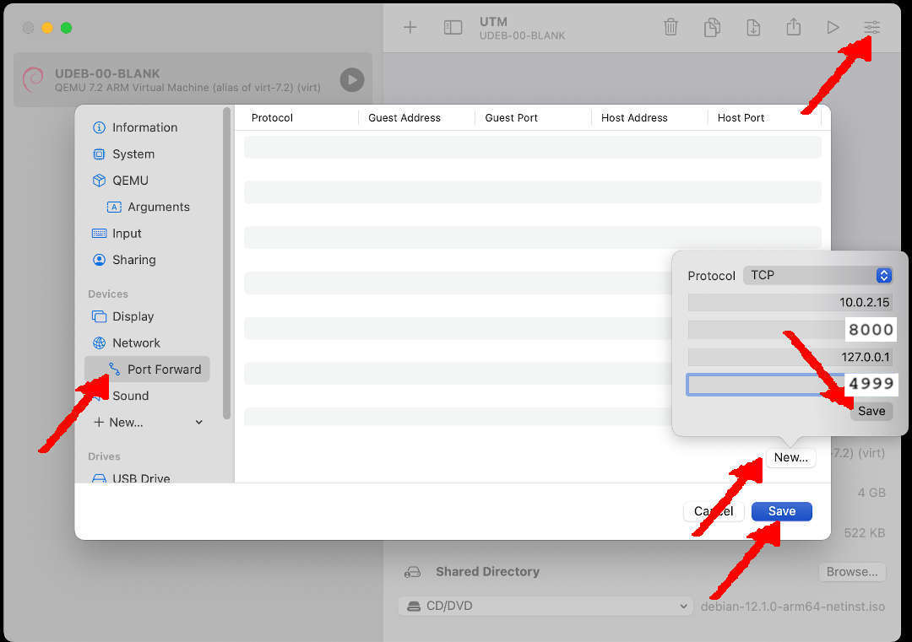
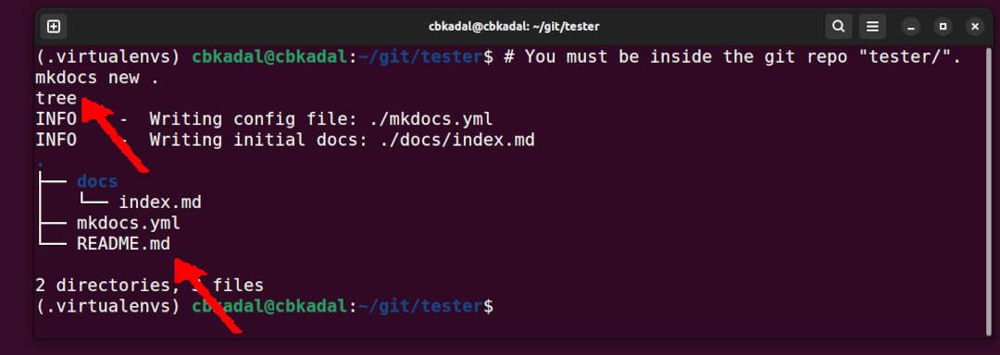

MkDocs for a Debian on VirtualBox/UTM
This GitHub Page is hosted at GitHub.com. For full documentation visit mkdocs.org. And remember, you are not The Virtual Ass!
--- The Virtual Ass
Network Address Translation (NAT) Settings
VirtualBox
MkDocs is using local port 8000. On your VirtualBox, you must redirect/translate the local port 8000 to the host port 4999 because I already use 5000 for Jekyll and 5001 for Docusaurus.
- VirtualBox Settings
- Network:Adapter1:
- Enable Network Adapter
- Attached to: NAT
- Port Forwarding:
- 127.0.0.1:4999 (Host) --- 10.0.2.15:8000 (Guest)

UTM
MkDocs is using local port 8000. On your UTM, you must redirect/translate the local port 8000 to the host port 4999 because I already use 5000 for Jekyll and 5001 for Docusaurus.
- UTM Settings
- Network Mode: Emulated VLAN
- Port Forward: New
- Protocol: TCP
- Guest Address: 10.0.2.15
- Guest Port: 8000
- Host Address: 127.0.0.1
- Host Port: 4999
- SAVE

GitHub Repo Setting
I prefer to start from GitHub so the results can be cloned.
New GitHub Repo (GitHub Site)
Create a new repo according to your respective faith and beliefs. I am using user "vrtass" and creating a new repo "tester" in this example.
- Create a new GitHub repo.
- New Repository
- Repository Name: "tester"
- Description: "tester"
- Public
- Add README.md
- Add .gitignore: Python (temporary)
- Choose any free LICENSE
- See also https://doit.vlsm.org/030.html
- Create a GitHub page.
- There is no need to do anything since the branch "gh-pages" will automatically create a GitHub Page?!
Clone Repo on Your Debian
I am using user "vrtass" and creating a new repo "tester" in this example. Remember, YOU ARE NOT VRTASS!
# Make sure, you have the proper GITHUB and REPO variable!
git clone git@github.com:$GITHUB/$REPO.git
cd $REPO/
File .gitignore
This is an example of a ".gitignore" file.
# REVISI: Sun 01 Dec 2024 00:00
# REVISI: Fri 29 Nov 2024 19:00
# REVISI: Thu 28 Nov 2024 21:00
# STARTX: Thu 28 Nov 2024 17:00
# (c) 2024-2024 BinKadal, Sdn. Bhd.
# With a little help from chatGPT.
# Byte-compiled / optimized / DLL files
__pycache__/
*.py[cod]
*$py.class
# Distribution / packaging
.Python
env/
build/
develop-eggs/
dist/
downloads/
eggs/
.eggs/
lib/
lib64/
node_modules/
parts/
sdist/
var/
package*.json
*.egg-info/
.installed.cfg
*.egg
# PyInstaller
*.manifest
*.spec
# Installer logs
pip-log.txt
pip-delete-this-directory.txt
*.log
# Unit test / coverage reports
# Unit test / coverage reports
htmlcov/
.tox/
.coverage
.coverage.*
.cache
nosetests.xml
coverage.xml
*,cover
.hypothesis/
# Virtualenv
venv/
ENV/
# MkDocs documentation
site*/
# Translations
*.mo
# Scrapy stuff:
.scrapy
# PyBuilder
target/
# IPython Notebook
.ipynb_checkpoints
# pyenv
.python-version
# Miscellaneous
.mkdocs-env/
*.tmp
.DS_Store
*.swp
Deb Packages
Make sure the following Debian packages are present in your system.
# USER privilege.
export DEBS="
aptitude
build-essential
git
libffi-dev
libssl-dev
python3
python3-dev
python3-pip
python3-venv
sudo
tree
vim
wget
"
time sudo apt-get install $DEBS -y
date
Check Python, Pip, and Venv
What is the current version?
Python Virtual Environment
A Python virtual environment is used for dependency isolation, avoidance of global installation, management of different Python versions, simplified dependency management, cleaner development environment, version control compatibility, and security.
# A centralized ".virtualenvs/" directory
mkdir -pv ~/.virtualenvs/
# Create a Virtual Environment
python3 -m venv ~/.virtualenvs/
Activate the Virtual Environment
- Before working with "MkDocs", always activate the virtual environment!
Once activated, you should see the name of the virtual environment in your terminal prompt, e.g. "(.virtualenvs) cbkadal@cbkadal:~/git/tester$ "

Install MkDocs and additional MkDocs plugins
- Do not forget to activate the virtual environment!
# Upgrade, Clean Up, and Verify Version
pip install --upgrade \
pip \
mkdocs \
mkdocs-awesome-pages-plugin \
mkdocs-include-markdown-plugin \
mkdocs-macros-plugin \
mkdocs-material \
pymdown-extensions \
echo "= ======================================="
pip --version
mkdocs --version
pip cache purge
Create MkDocs inside repo "tester/"
- Check the file tree
Test from VirtualBox
File: mkdocs.yml
Replace file "mkdocs.yml" by copy/paste the following. You might want to replace variables like "copyright", "site_url", "logo", "favicon.ico", etc. because YOU ARE NOT VRTASS!
copyright: Copyright © 2024-2024 VRTASS
site_name: MkDocs for Debian on VirtualBox/UTM
site_author: The Virtual Ass
site_description: >
MkDocs for
a Virtual Debian Guest
on VirtualBox.
site_url: https://vrtass.github.io/tester/
nav:
- Home: index.md
- Examples: examples.md
theme:
name: material
font:
text: Verdana
code: Red Hat Mono
logo: img/vrtass.jpg
favicon: img/favicon.ico
features:
- content.code.copy
- navigation.footer
palette:
# Dark Mode
- scheme: slate
toggle:
icon: material/weather-sunny
name: Dark mode
primary: green
accent: deep purple
# Light Mode
- scheme: default
toggle:
icon: material/weather-night
name: Light mode
primary: blue
accent: deep orange
markdown_extensions:
- admonition
- attr_list
- pymdownx.details
- pymdownx.emoji:
emoji_index: !!python/name:material.extensions.emoji.twemoji
emoji_generator: !!python/name:material.extensions.emoji.to_svg
- pymdownx.highlight:
anchor_linenums: true
# linenums: true
line_spans: __span
pygments_lang_class: true
- pymdownx.inlinehilite
- pymdownx.snippets
- pymdownx.superfences:
custom_fences:
- name: mermaid
class: mermaid
format: !!python/name:pymdownx.superfences.fence_code_format
- pymdownx.tabbed:
alternate_style: true
extra:
author: "The Virtual Ass"
custom_variable: "This is a custom variable from mkdocs.yml"
github_url: "https://github.com/vrtass/tester/"
social:
- icon: simple/youtube
link: https://youtube.com/
- icon: simple/linkedin
link: https://linkedin.com/
seo:
description: >
MkDocs for
a Virtual Debian Guest
on VirtualBox.
keywords: "keyword1, keyword2"
extra_css:
- assets/styles.css
plugins:
- awesome-pages
- include-markdown
- search
- macros
# REVISION: Thu 05 Dec 2024 19:00
# REVISION: Thu 05 Dec 2024 15:00
# REVISION: Tue 03 Dec 2024 22:00
# REVISION: Tue 03 Dec 2024 20:00
# REVISION: Tue 03 Dec 2024 16:00
# STARTING: Tue 03 Dec 2024 09:00
Create Some Dummy Files
# Replace These Dummy Files
mkdir -pv assets/ configs/ img/ static/
touch examples.md assets/styles.css img/{vrtass.jpg,favicon.ico} static/hello.c
Build the MkDocs site
- Build, commit, and push (master)
Deploy and Check Local
- Checkit out at https://vrtass.github.io/tester/, but YOU ARE NOT VRTASS!
Links
DISCLAIMER
This is the WAY! This template is mainly written for OWN PURPOSES, it will be helpful in the future. It is based on "Google There, Google Here, Try That, Try This, Then Ask." Whether this is PLAGIARY or RESEARCH, there has never been a claim that this is an original work, nor is it necessarily the best solution, and not for Scopus consumption :). You might provide feedback on alternative ideas.
REVISION: Thu 05 Dec 2024 21:00
REVISION: Thu 05 Dec 2024 21:00 REVISION: Tue 03 Dec 2024 23:00 REVISION: Tue 03 Dec 2024 16:00 REVISION: Mon 02 Dec 2024 21:00 REVISION: Mon 02 Dec 2024 20:00 STARTING: Sun 01 Dec 2024 01:00